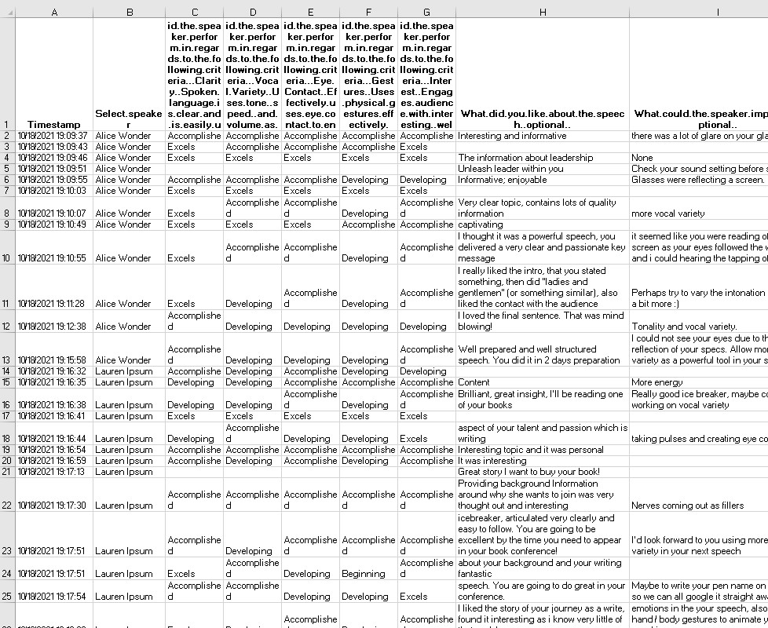

Automating analytical reports with R Markdown.
Before the global Covid19 pandemic, I joined a local public speaking club to improve my communication and presentation skills. During my membership time, I also became a club officer helping other members with their speaking progress. Part of the learning was to receive written feedback in form of paper slips from other members after each speech. When the meetings moved from physical to virtual due to lockdown, our collection method also changed from hand-written paper slips to google forms. The club committee then reflected on the forms and reformulated questions that were asked.
Goal
Having the new questions I realized it would be more useful for the speakers to see a visual progress of their speech rather than the spreadsheet shown in the following picture. The need for a more efficient presentation of the speech feedback led me to design an interactive report using the power of RMarkdown.
Process
I set up the process so that it can create the report for one or more speakers at once using a for loop. There are two main files to create the reports. The bulk of the processing is done using an .rmd file which involves a few steps:
- Filtering data for the selected speaker.
- Data cleaning, removing missing values and duplicate records (which sometimes happens, likely due to connection issues when submitting the google form) and extracting the speech date.
- Splitting the data into scaled variables and text fields as they were processed differently in the following stages.
- Reshaping the scaled variables and creating a stacked barplot.
- Removing N/A records from the text fields to avoid blank lines in the final table. These text fields were not mandatory so were sometimes left empty.
- Creating an interactive table.
As the final "knitted" report is a HTML file, I also created a simple .css stylesheet that is linked to the .rmd file. I used it to define my own fonts, colours spacing and also a custom footer.
Result
There are two possible outputs: html report (as shown below) with interactive elements, allowing the speaker to see the number of attendees who gave the speech a certain rating and a reactive table that highlights row over which the the viewer can hover for easier reading. The second output is a pdf report which is created by printing the html document. The code automatically produces all reports for the speakers without the necessity to create each document separately. The full code can be found here.